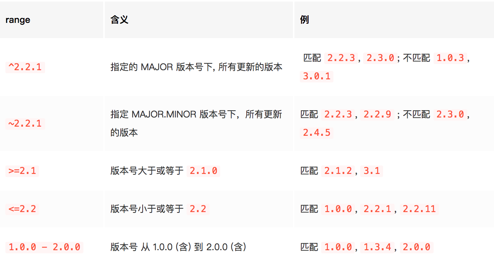
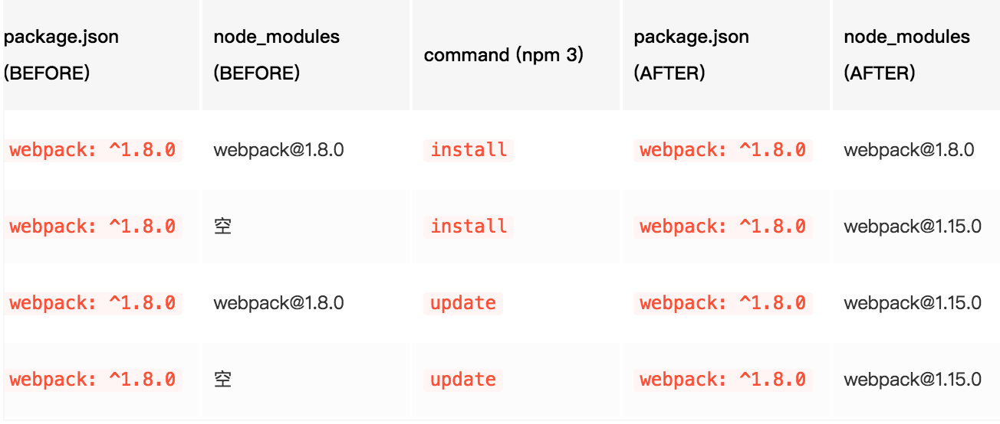
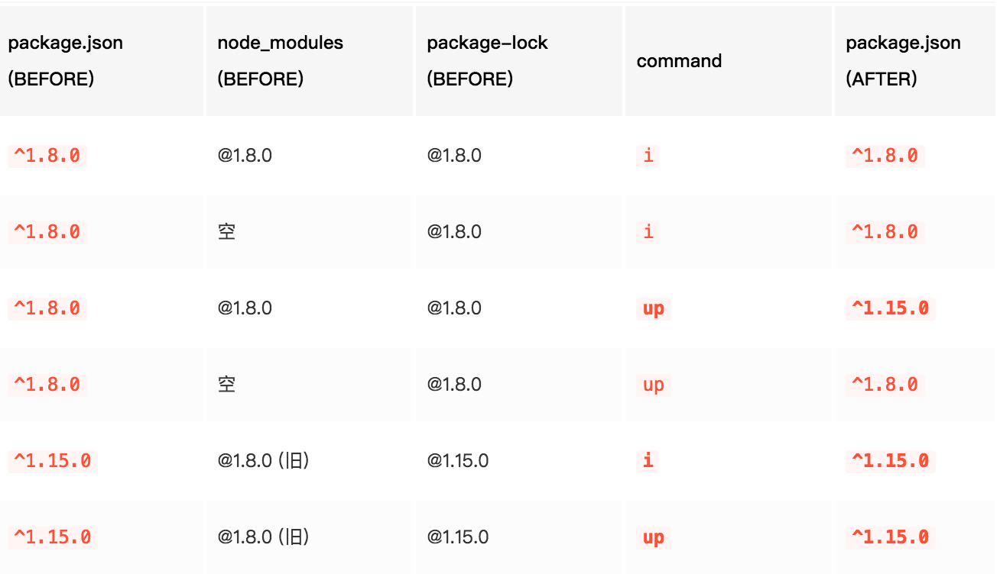
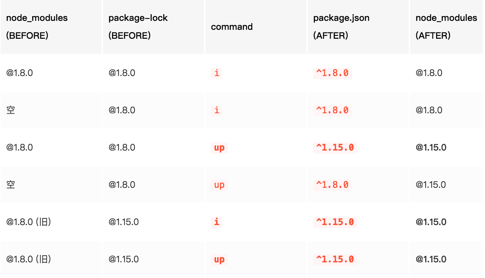

<!DOCTYPE html>


  


<html class="theme-next muse use-motion" lang="zh-Hans">
<head>
  <meta charset="UTF-8"/>
<meta http-equiv="X-UA-Compatible" content="IE=edge" />
<meta name="viewport" content="width=device-width, initial-scale=1, maximum-scale=1"/>
<meta name="theme-color" content="#222">


<meta http-equiv="Cache-Control" content="no-transform" />
<meta http-equiv="Cache-Control" content="no-siteapp" />


  
  
  <link href="/MyBlog/lib/fancybox/source/jquery.fancybox.css?v=2.1.5" rel="stylesheet" type="text/css" />


<link href="/MyBlog/lib/font-awesome/css/font-awesome.min.css?v=4.6.2" rel="stylesheet" type="text/css" />

<link href="/MyBlog/css/main.css?v=5.1.4" rel="stylesheet" type="text/css" />


  <link rel="apple-touch-icon" sizes="180x180" href="/MyBlog/images/apple-touch-icon-next.png?v=5.1.4">


  <link rel="icon" type="image/png" sizes="32x32" href="/MyBlog/images/favicon-32x32-next.png?v=5.1.4">


  <link rel="icon" type="image/png" sizes="16x16" href="/MyBlog/images/favicon-16x16-next.png?v=5.1.4">


  <link rel="mask-icon" href="/MyBlog/images/logo.svg?v=5.1.4" color="#222">


  <meta name="keywords" content="npm," />


  <link rel="alternate" href="/MyBlog/atom.xml" title="个人博客" type="application/atom+xml" />


<meta name="description" content="依赖包版本管理 semver  npm 依赖管理的一个重要特性是采用了语义化版本 (semver) 规范，作为依赖版本管理方案。semver 约定一个包的版本号必须包含3个数字，格式必须为 MAJOR.MINOR.PATCH, 意为 主版本号.小版本号.修订版本号.    MAJOR 对应大的版本号迭代，做了不兼容旧版的修改时要更新 MAJOR 版本号   MINOR 对应小版本迭代，发生兼容">
<meta name="keywords" content="npm">
<meta property="og:type" content="article">
<meta property="og:title" content="npm依赖包版本管理">
<meta property="og:url" content="https://qiuyuxiu.github.io/MyBlog/2018/12/15/npm依赖包版本管理/index.html">
<meta property="og:site_name" content="个人博客">
<meta property="og:description" content="依赖包版本管理 semver  npm 依赖管理的一个重要特性是采用了语义化版本 (semver) 规范，作为依赖版本管理方案。semver 约定一个包的版本号必须包含3个数字，格式必须为 MAJOR.MINOR.PATCH, 意为 主版本号.小版本号.修订版本号.    MAJOR 对应大的版本号迭代，做了不兼容旧版的修改时要更新 MAJOR 版本号   MINOR 对应小版本迭代，发生兼容">
<meta property="og:locale" content="zh-Hans">
<meta property="og:image" content="https://qiuyuxiu.github.io/MyBlog/images/npm2.png">
<meta property="og:image" content="https://qiuyuxiu.github.io/MyBlog/images/npm3.png">
<meta property="og:image" content="https://qiuyuxiu.github.io/MyBlog/images/npm4.png">
<meta property="og:image" content="https://qiuyuxiu.github.io/MyBlog/images/npm5.png">
<meta property="og:updated_time" content="2018-12-15T08:28:33.000Z">
<meta name="twitter:card" content="summary">
<meta name="twitter:title" content="npm依赖包版本管理">
<meta name="twitter:description" content="依赖包版本管理 semver  npm 依赖管理的一个重要特性是采用了语义化版本 (semver) 规范，作为依赖版本管理方案。semver 约定一个包的版本号必须包含3个数字，格式必须为 MAJOR.MINOR.PATCH, 意为 主版本号.小版本号.修订版本号.    MAJOR 对应大的版本号迭代，做了不兼容旧版的修改时要更新 MAJOR 版本号   MINOR 对应小版本迭代，发生兼容">
<meta name="twitter:image" content="https://qiuyuxiu.github.io/MyBlog/images/npm2.png">


<script type="text/javascript" id="hexo.configurations">
  var NexT = window.NexT || {};
  var CONFIG = {
    root: '/MyBlog/',
    scheme: 'Muse',
    version: '5.1.4',
    sidebar: {"position":"left","display":"post","offset":12,"b2t":false,"scrollpercent":false,"onmobile":false},
    fancybox: true,
    tabs: true,
    motion: {"enable":true,"async":false,"transition":{"post_block":"fadeIn","post_header":"slideDownIn","post_body":"slideDownIn","coll_header":"slideLeftIn","sidebar":"slideUpIn"}},
    duoshuo: {
      userId: '0',
      author: '博主'
    },
    algolia: {
      applicationID: '',
      apiKey: '',
      indexName: '',
      hits: {"per_page":10},
      labels: {"input_placeholder":"Search for Posts","hits_empty":"We didn't find any results for the search: ${query}","hits_stats":"${hits} results found in ${time} ms"}
    }
  };
</script>


  <link rel="canonical" href="https://qiuyuxiu.github.io/MyBlog/2018/12/15/npm依赖包版本管理/"/>


  <title>npm依赖包版本管理 | 个人博客</title>
  


</head>

<body itemscope itemtype="http://schema.org/WebPage" lang="zh-Hans">

  
  
    
  

  <div class="container sidebar-position-left page-post-detail">
    <div class="headband"></div>

    <header id="header" class="header" itemscope itemtype="http://schema.org/WPHeader">
      <div class="header-inner"><div class="site-brand-wrapper">
  <div class="site-meta ">
    

    <div class="custom-logo-site-title">
      <a href="/MyBlog/"  class="brand" rel="start">
        <span class="logo-line-before"><i></i></span>
        <span class="site-title">个人博客</span>
        <span class="logo-line-after"><i></i></span>
      </a>
    </div>
      
        <p class="site-subtitle">有关于前端学习的个人博客</p>
      
  </div>

  <div class="site-nav-toggle">
    <button>
      <span class="btn-bar"></span>
      <span class="btn-bar"></span>
      <span class="btn-bar"></span>
    </button>
  </div>
</div>

<nav class="site-nav">
  

  
    <ul id="menu" class="menu">
      
        
        <li class="menu-item menu-item-home">
          <a href="/MyBlog/" rel="section">
            
              <i class="menu-item-icon fa fa-fw fa-home"></i> <br />
            
            首页
          </a>
        </li>
      
        
        <li class="menu-item menu-item-tags">
          <a href="/MyBlog/tags/" rel="section">
            
              <i class="menu-item-icon fa fa-fw fa-tags"></i> <br />
            
            标签
          </a>
        </li>
      
        
        <li class="menu-item menu-item-categories">
          <a href="/MyBlog/categories/" rel="section">
            
              <i class="menu-item-icon fa fa-fw fa-th"></i> <br />
            
            分类
          </a>
        </li>
      
        
        <li class="menu-item menu-item-archives">
          <a href="/MyBlog/archives/" rel="section">
            
              <i class="menu-item-icon fa fa-fw fa-archive"></i> <br />
            
            归档
          </a>
        </li>
      

      
    </ul>
  

  
</nav>


 </div>
    </header>

    <main id="main" class="main">
      <div class="main-inner">
        <div class="content-wrap">
          <div id="content" class="content">
            

  <div id="posts" class="posts-expand">
    

  

  
  
  

  <article class="post post-type-normal" itemscope itemtype="http://schema.org/Article">
  
  
  
  <div class="post-block">
    <link itemprop="mainEntityOfPage" href="https://qiuyuxiu.github.io/MyBlog/MyBlog/2018/12/15/npm依赖包版本管理/">

    <span hidden itemprop="author" itemscope itemtype="http://schema.org/Person">
      <meta itemprop="name" content="Daisy">
      <meta itemprop="description" content="">
      <meta itemprop="image" content="/MyBlog/images/avatar.gif">
    </span>

    <span hidden itemprop="publisher" itemscope itemtype="http://schema.org/Organization">
      <meta itemprop="name" content="个人博客">
    </span>

    
      <header class="post-header">

        
        
          <h1 class="post-title" itemprop="name headline">npm依赖包版本管理</h1>
        

        <div class="post-meta">
          <span class="post-time">
            
              <span class="post-meta-item-icon">
                <i class="fa fa-calendar-o"></i>
              </span>
              
                <span class="post-meta-item-text">发表于</span>
              
              <time title="创建于" itemprop="dateCreated datePublished" datetime="2018-12-15T15:54:32+08:00">
                2018-12-15
              </time>
            

            

            
          </span>

          
            <span class="post-category" >
            
              <span class="post-meta-divider">|</span>
            
              <span class="post-meta-item-icon">
                <i class="fa fa-folder-o"></i>
              </span>
              
                <span class="post-meta-item-text">分类于</span>
              
              
                <span itemprop="about" itemscope itemtype="http://schema.org/Thing">
                  <a href="/MyBlog/categories/前端/" itemprop="url" rel="index">
                    <span itemprop="name">前端</span>
                  </a>
                </span>

                
                
              
            </span>
          

          
            
          

          
          

          

          

          

        </div>
      </header>
    

    
    
    
    <div class="post-body" itemprop="articleBody">

      
      

      
        <h2 id="依赖包版本管理"><a href="#依赖包版本管理" class="headerlink" title="依赖包版本管理"></a>依赖包版本管理</h2><ul>
<li>semver</li>
</ul>
<p>npm 依赖管理的一个重要特性是采用了语义化版本 (semver) 规范，作为依赖版本管理方案。<br>semver 约定一个包的版本号必须包含3个数字，格式必须为 MAJOR.MINOR.PATCH, 意为 主版本号.小版本号.修订版本号.  </p>
<ol>
<li>MAJOR 对应大的版本号迭代，做了不兼容旧版的修改时要更新 MAJOR 版本号  </li>
<li>MINOR 对应小版本迭代，发生兼容旧版API的修改或功能更新时，更新MINOR版本号  </li>
<li>PATCH 对应修订版本号，一般针对修复 BUG 的版本号  </li>
</ol>
<p>对于包作者（发布者），npm 要求在 publish 之前，必须更新版本号。npm 提供了 npm version 工具，执行 npm version major|minor|patch 可以简单地将版本号中相应的数字加1。<br>如果包是一个 git 仓库，npm version 还会自动创建一条注释为更新后版本号的 git commit 和名为该版本号的 tag。<br>对于包的引用者来说，我们需要在 dependencies 中使用 semver 约定的 semver range 指定所需依赖包的版本号或版本范围。npm 提供了网站 <a href="https://semver.npmjs.com" target="_blank" rel="noopener">https://semver.npmjs.com</a> 可方便地计算所输入的表达式的匹配范围。常用的规则示例如下表：<br>  </p>
<ol>
<li>任意两条规则，用空格连接起来，表示“与”逻辑，即两条规则的交集:<br>如 &gt;=2.3.1 &lt;=2.8.0 可以解读为: &gt;=2.3.1 且 &lt;=2.8.0  </li>
</ol>
<ul>
<li>可以匹配 2.3.1, 2.4.5, 2.8.0  </li>
<li>但不匹配 1.0.0, 2.3.0, 2.8.1, 3.0.0</li>
</ul>
<ol start="2">
<li>任意两条规则，通过 || 连接起来，表示“或”逻辑，即两条规则的并集:<br>如 ^2 &gt;=2.3.1 || ^3 &gt;3.2  </li>
</ol>
<ul>
<li>可以匹配 2.3.1, 2,8.1, 3.3.1  </li>
<li>但不匹配 1.0.0, 2.2.0, 3.1.0, 4.0.0</li>
</ul>
<ol start="3">
<li>除了这几种，还有如下更直观的表示版本号范围的写法:</li>
</ol>
<ul>
<li>* 或 x 匹配所有主版本</li>
<li>1 或 1.x 匹配 主版本号为 1 的所有版本</li>
<li>1.2 或 1.2.x 匹配 版本号为 1.2 开头的所有版本</li>
</ul>
<ol start="4">
<li>在常规仅包含数字的版本号之外，semver 还允许在 MAJOR.MINOR.PATCH 后追加 - 后跟点号分隔的标签，作为预发布版本标签 - Prerelese Tags，通常被视为不稳定、不建议生产使用的版本。例如：<figure class="highlight plain"><table><tr><td class="gutter"><pre><span class="line">1</span><br><span class="line">2</span><br><span class="line">3</span><br></pre></td><td class="code"><pre><span class="line">1.0.0-alpha</span><br><span class="line">1.0.0-beta.1</span><br><span class="line">1.0.0-rc.3</span><br></pre></td></tr></table></figure>
</li>
</ol>
<p>我们最常见的是 ^1.8.11 这种格式的 range, 因为我们在使用 <code>npm install &lt;package name&gt;</code> 安装包时，npm 默认安装当前最新版本，例如 1.8.11, 然后在所安装的版本号前加^号, 将 ^1.8.11 写入 package.json 依赖配置，意味着可以匹配 1.8.11 以上，2.0.0 以下的所有版本。</p>
<h2 id="依赖版本升级"><a href="#依赖版本升级" class="headerlink" title="依赖版本升级"></a>依赖版本升级</h2><p>在安装完一个依赖包之后有新版本发布了，如何使用 npm 进行版本升级呢？——答案是简单的 npm install 或 npm update，但在不同的 npm 版本，不同的 package.json, package-lock.json 文件，安装/升级的表现也不同。<br>以 webpack 举例，做如下的前提假设:  </p>
<ol>
<li>我们的工程项目 app 依赖 webpack</li>
<li>项目最初初始化时，安装了当时最新的包 <a href="mailto:webpack@1.8.0" target="_blank" rel="noopener">webpack@1.8.0</a>，并且 package.json 中的依赖配置为: “webpack”: “^1.8.0”</li>
<li>当前（2018年3月） webpack 最新版本为 4.2.0, webpack 1.x 最新子版本为 1.15.0</li>
<li>如果使用的是 npm 3, 并且项目不含 package-lock.json, 那么根据 node_modules 是否为空，执行 install/update 的结果如下 (node 6.13.1, npm 3.10.10 环境下试验):<br></li>
</ol>
<p>根据这个表可以对 npm 3 得出以下结论：  </p>
<ol>
<li>如果本地 node_modules 已安装，再次执行 install 不会更新包版本, 执行 update 才会更新; 而如果本地 node_modules 为空时，执行 install/update 都会直接安装更新包;</li>
<li>npm update 总是会把包更新到符合 package.json 中指定的 semver 的最新版本号——本例中符合 ^1.8.0 的最新版本为 1.15.0;</li>
<li>一旦给定 package.json, 无论后面执行 npm install 还是 update, package.json 中的 webpack 版本一直顽固地保持一开始的 ^1.8.0 岿然不动。</li>
</ol>
<p>这里不合理的地方在于，如果最开始团队中第一个人安装了 <a href="mailto:webpack@1.8.0" target="_blank" rel="noopener">webpack@1.8.0</a>, 而新加入项目的成员, checkout 工程代码后执行 npm install 会安装得到不太一样的 1.15.0 版本。虽然 semver 约定了小版本号应当保持向下兼容（相同大版本号下的小版本号）兼容，但万一有不熟悉不遵循此约定的包发布者，发布了不兼容的包，此时就可能出现因依赖环境不同导致的 bug。  </p>
<p>下面由 npm 5 带着 package-lock.json 闪亮登场，执行 install/update 的效果是这样的 (node 9.8.0, npm 5.7.1 环境下试验):<br></p>
<p>与 npm 3 相比，在安装和更新依赖版本上主要的区别为：  </p>
<ol>
<li>无论何时执行 install, npm 都会优先按照 package-lock 中指定的版本来安装 webpack; 避免了 npm 3 表中情形 b) 的状况;</li>
<li>无论何时完成安装/更新, package-lock 文件总会跟着 node_modules 更新 —— (因此可以视 package-lock 文件为 node_modules 的 JSON 表述)</li>
<li>已安装 node_modules 后若执行 npm update，package.json 中的版本号也会随之更改为 ^1.15.0<br>由此可见 npm 5.1 使得 package.json 和 package-lock.json 中所保存的版本号更加统一，解决了 npm 之前的各种问题。只要遵循好的实践习惯，团队成员可以很方便地维护一套应用代码和 node_modules 依赖都一致的环境。</li>
</ol>
<h2 id="最佳实践"><a href="#最佳实践" class="headerlink" title="最佳实践"></a>最佳实践</h2><p>总结起来，在 2018 年 (node 9.8.0, npm 5.7.1) 时代，我认为的依赖版本管理应当是:<br>使用 npm: &gt;=5.1 版本, 保持 package-lock.json 文件默认开启配置。  </p>
<ol>
<li>初始化：第一作者初始化项目时使用 <code>npm install &lt;package&gt;</code> 安装依赖包, 默认保存 ^X.Y.Z 依赖 range 到 package.json中; 提交 package.json, package-lock.json, 不要提交 node_modules 目录。</li>
<li>初始化：项目成员首次 checkout/clone 项目代码后，执行一次 npm install 安装依赖包</li>
<li>不要手动修改 package-lock.json</li>
</ol>
<p>升级依赖包:</p>
<ol>
<li>升级小版本: 本地执行 npm update 升级到新的小版本  </li>
<li>升级大版本: 本地执行 <code>npm install &lt;package-name&gt;@&lt;version&gt;</code> 升级到新的大版本</li>
<li>也可手动修改 package.json 中版本号为要升级的版本(大于现有版本号)并指定所需的 semver, 然后执行<code>npm install</code><br>本地验证升级后新版本无问题后，提交新的 package.json, package-lock.json 文件</li>
</ol>
<p>降级依赖包:</p>
<ol>
<li>正确: <code>npm install &lt;package-name&gt;@&lt;old-version&gt;</code> 验证无问题后，提交 package.json 和 package-lock.json 文件</li>
<li>错误: 手动修改 package.json 中的版本号为更低版本的 semver, 这样修改并不会生效，因为再次执行 npm install 依然会安装 package-lock.json 中的锁定版本</li>
</ol>
<p>删除依赖包:</p>
<ol>
<li>Plan A: <code>npm uninstall &lt;package&gt;</code> 并提交 package.json 和 package-lock.json</li>
<li>Plan B: 把要卸载的包从 package.json 中 dependencies 字段删除, 然后执行 npm install 并提交 package.json 和 package-lock.json</li>
</ol>
<p>任何时候有人提交了 package.json, package-lock.json 更新后，团队其他成员应在 svn update/git pull 拉取更新后执行 npm install 脚本安装更新后的依赖包</p>

      
    </div>
    
    
    

    

    

    

    <footer class="post-footer">
      
        <div class="post-tags">
          
            <a href="/MyBlog/tags/npm/" rel="tag"># npm</a>
          
        </div>
      

      
      
      

      
        <div class="post-nav">
          <div class="post-nav-next post-nav-item">
            
              <a href="/MyBlog/2018/12/15/npm知识/" rel="next" title="npm知识">
                <i class="fa fa-chevron-left"></i> npm知识
              </a>
            
          </div>

          <span class="post-nav-divider"></span>

          <div class="post-nav-prev post-nav-item">
            
              <a href="/MyBlog/2018/12/15/URL编码解码/" rel="prev" title="URL编码解码">
                URL编码解码 <i class="fa fa-chevron-right"></i>
              </a>
            
          </div>
        </div>
      

      
      
    </footer>
  </div>
  
  
  
  </article>


    <div class="post-spread">
      
    </div>
  </div>


          </div>
          


          

  


        </div>
        
          
  
  <div class="sidebar-toggle">
    <div class="sidebar-toggle-line-wrap">
      <span class="sidebar-toggle-line sidebar-toggle-line-first"></span>
      <span class="sidebar-toggle-line sidebar-toggle-line-middle"></span>
      <span class="sidebar-toggle-line sidebar-toggle-line-last"></span>
    </div>
  </div>

  <aside id="sidebar" class="sidebar">
    
    <div class="sidebar-inner">

      

      
        <ul class="sidebar-nav motion-element">
          <li class="sidebar-nav-toc sidebar-nav-active" data-target="post-toc-wrap">
            文章目录
          </li>
          <li class="sidebar-nav-overview" data-target="site-overview-wrap">
            站点概览
          </li>
        </ul>
      

      <section class="site-overview-wrap sidebar-panel">
        <div class="site-overview">
          <div class="site-author motion-element" itemprop="author" itemscope itemtype="http://schema.org/Person">
            
              <p class="site-author-name" itemprop="name">Daisy</p>
              <p class="site-description motion-element" itemprop="description">前端技术个人博客</p>
          </div>

          <nav class="site-state motion-element">

            
              <div class="site-state-item site-state-posts">
              
                <a href="/MyBlog/archives/">
              
                  <span class="site-state-item-count">46</span>
                  <span class="site-state-item-name">日志</span>
                </a>
              </div>
            

            
              
              
              <div class="site-state-item site-state-categories">
                <a href="/MyBlog/categories/index.html">
                  <span class="site-state-item-count">23</span>
                  <span class="site-state-item-name">分类</span>
                </a>
              </div>
            

            
              
              
              <div class="site-state-item site-state-tags">
                <a href="/MyBlog/tags/index.html">
                  <span class="site-state-item-count">48</span>
                  <span class="site-state-item-name">标签</span>
                </a>
              </div>
            

          </nav>

          
            <div class="feed-link motion-element">
              <a href="/MyBlog/atom.xml" rel="alternate">
                <i class="fa fa-rss"></i>
                RSS
              </a>
            </div>
          

          

          
          

          
          

          

        </div>
      </section>

      
      <!--noindex-->
        <section class="post-toc-wrap motion-element sidebar-panel sidebar-panel-active">
          <div class="post-toc">

            
              
            

            
              <div class="post-toc-content"><ol class="nav"><li class="nav-item nav-level-2"><a class="nav-link" href="#依赖包版本管理"><span class="nav-number">1.</span> <span class="nav-text">依赖包版本管理</span></a></li><li class="nav-item nav-level-2"><a class="nav-link" href="#依赖版本升级"><span class="nav-number">2.</span> <span class="nav-text">依赖版本升级</span></a></li><li class="nav-item nav-level-2"><a class="nav-link" href="#最佳实践"><span class="nav-number">3.</span> <span class="nav-text">最佳实践</span></a></li></ol></div>
            

          </div>
        </section>
      <!--/noindex-->
      

      

    </div>
  </aside>


        
      </div>
    </main>

    <footer id="footer" class="footer">
      <div class="footer-inner">
        <div class="copyright">&copy; 2017 &mdash; <span itemprop="copyrightYear">2018</span>
  <span class="with-love">
    <i class="fa fa-user"></i>
  </span>
  <span class="author" itemprop="copyrightHolder">Daisy</span>

  
</div>


        


        
      </div>
    </footer>

    
      <div class="back-to-top">
        <i class="fa fa-arrow-up"></i>
        
      </div>
    

    

  </div>

  

<script type="text/javascript">
  if (Object.prototype.toString.call(window.Promise) !== '[object Function]') {
    window.Promise = null;
  }
</script>


  


  
  
    <script type="text/javascript" src="/MyBlog/lib/jquery/index.js?v=2.1.3"></script>
  

  
  
    <script type="text/javascript" src="/MyBlog/lib/fastclick/lib/fastclick.min.js?v=1.0.6"></script>
  

  
  
    <script type="text/javascript" src="/MyBlog/lib/jquery_lazyload/jquery.lazyload.js?v=1.9.7"></script>
  

  
  
    <script type="text/javascript" src="/MyBlog/lib/velocity/velocity.min.js?v=1.2.1"></script>
  

  
  
    <script type="text/javascript" src="/MyBlog/lib/velocity/velocity.ui.min.js?v=1.2.1"></script>
  

  
  
    <script type="text/javascript" src="/MyBlog/lib/fancybox/source/jquery.fancybox.pack.js?v=2.1.5"></script>
  


  


  <script type="text/javascript" src="/MyBlog/js/src/utils.js?v=5.1.4"></script>

  <script type="text/javascript" src="/MyBlog/js/src/motion.js?v=5.1.4"></script>


  
  

  
  <script type="text/javascript" src="/MyBlog/js/src/scrollspy.js?v=5.1.4"></script>
<script type="text/javascript" src="/MyBlog/js/src/post-details.js?v=5.1.4"></script>


  


  <script type="text/javascript" src="/MyBlog/js/src/bootstrap.js?v=5.1.4"></script>


  


  


	


  


  


  


  

  

  

  
  

  

  

  

</body>
</html>
